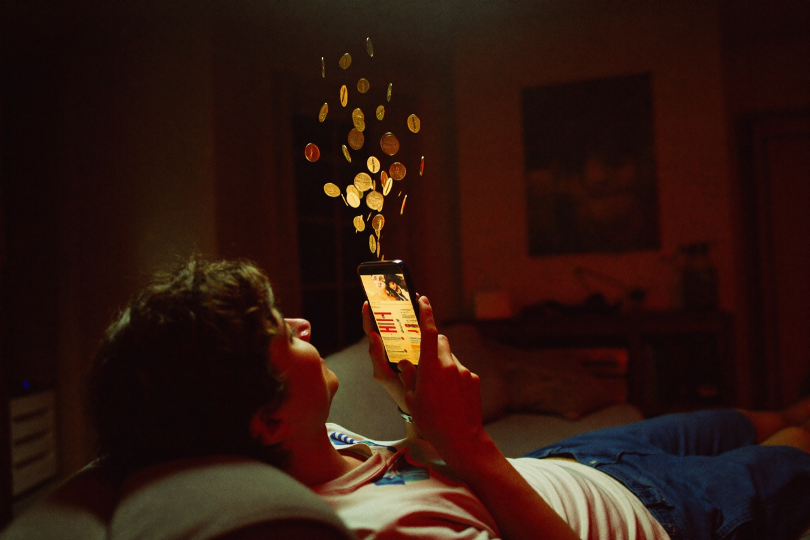
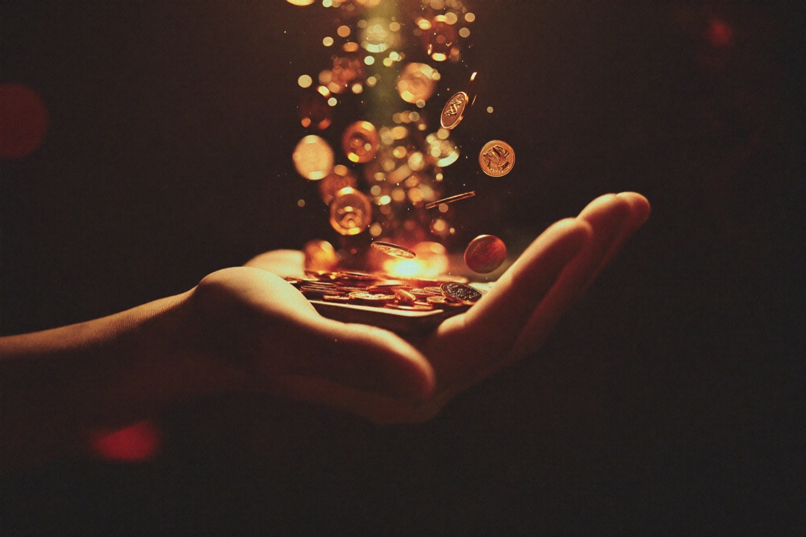
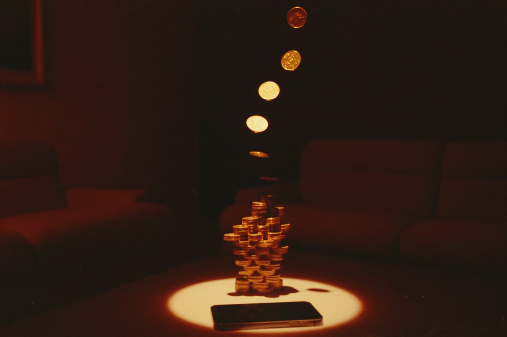

톤티비가 다른 OTT와 결정적으로 갈리는 지점은 ‘역할의 역전’이다. 경쟁사의 유저가 회차마다 결제하는 소비자라면, 톤티비의 유저는 시청하며 보상을 적립하는 Watch-to-Earn 파트너다.
유저는 드라마를 보는 동안 토큰(XONT)을 채굴한다. 콘텐츠를 즐기는 행위 자체가 다양한 혜택과 리워드로 돌아오는 구조다. “보는 게 곧 버는 것” — 시청이 소비가 아니라 자산 축적이 된다.
보는 게 곧 버는 것
광고만 보면 전 작품을 무제한 무료로 즐기고, 그 시청 시간만큼 토큰이 쌓인다. 시청자가 무언가를 ‘추가로’ 해야 하는 미션형 구조가 아니다. 평소처럼 드라마를 보기만 하면 된다 — 단지 그 시청이 기록되고, 보상으로 환산될 뿐이다.

이는 톤티비 1분 소개영상의 클라이맥스이기도 하다. 즐기는 동안 황금 토큰이 비처럼 쏟아지고, 지갑의 숫자가 차오른다. 메시지는 명확하다. “Watch. Enjoy. Earn.”
떠날 이유가 없는 유저
참여형 보상은 강력한 충성도로 이어진다. 채널 커뮤니티에서의 토론·공유·추천이 시청과 동시에 일어나고, 토큰 보유가 유저를 생태계에 안착(Lock-in)시킨다. 휘발성 소비가 아니라 반복 시청과 락인이다.

그들의 유저는 회당 결제하는 소비자. 톤티비 유저는 보면서 토큰을 채굴하는 Watch-to-Earn 파트너 — 떠날 이유가 없다. — 톤티비 소개 자료
시청자가 늘수록 채굴과 보상이 함께 커지고, 그 성장은 다시 더 많은 시청과 공유를 부른다. 시청자가 채굴하는 토큰은 노드 풀에도 1:1로 미러링되어 분배된다 — 즉, 시청자의 몰입이 곧 노드 사업자의 수익으로 연결되는 선순환이다.
※ 토큰·리워드 구조의 세부 비율과 스왑 비율은 정식 가동 시점에 공개됩니다.
블로그 전체 보기